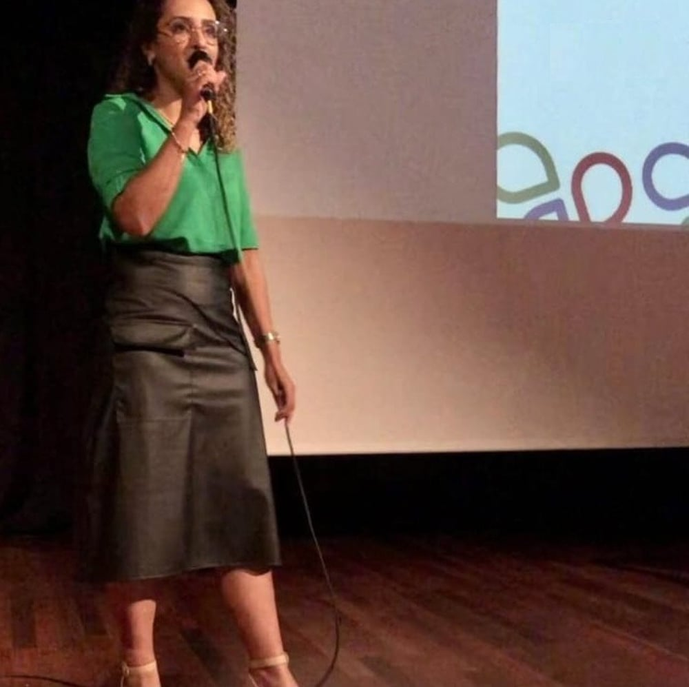

Ansiedade e tristeza
Quando os pensamentos se acumulam ou os dias parecem mais difíceis, ter espaço para falar sobre o que você sente pode ser um começo.
Terapia integrativa & psicanálise
Entre tudo o que você precisa fazer e tudo o que sente, também existe espaço para você.
Escuta e acolhimento para mulheres e adolescentes, em um atendimento que respeita a sua história.

Primeiro, um olhar para você
Às vezes, o que pesa por dentro não aparece para quem está ao redor. Os pensamentos não desaceleram, as relações se tornam difíceis e as próprias necessidades ficam para depois.
Você não precisa encontrar todas as respostas antes de buscar apoio. Podemos começar pelo que faz sentido para você, hoje.
Como posso acompanhar você
Um espaço para falar sobre as questões que atravessam a sua vida, com respeito ao seu momento e à sua individualidade.
Quando os pensamentos se acumulam ou os dias parecem mais difíceis, ter espaço para falar sobre o que você sente pode ser um começo.
Olhar para a forma como você se percebe, acolher suas necessidades e explorar uma relação mais cuidadosa consigo mesma.
Compreender o que acontece nas suas relações e conversar sobre comunicação, limites e os padrões que se repetem.
Um olhar acolhedor para os vínculos, para a dificuldade de se colocar em primeiro lugar e para o reconhecimento dos seus limites.
Dar atenção ao cansaço emocional e ao que a rotina tem exigido de você, abrindo espaço para conversar sobre suas prioridades.
Apoio para conversar sobre os desafios de criar filhos, as relações familiares e possibilidades de fortalecer os vínculos em casa.
Você não precisa saber exatamente por onde começar.
Podemos conversarPor trás de cada atendimento,
um encontro entre histórias.
Conheça quem vai escutar você
Acredito em um cuidado que olha para a pessoa e para a sua história, com sensibilidade e respeito.
Sou terapeuta integrativa, psicanalista clínica, arteterapeuta e palestrante, com especialização em Psicotraumatologia.
Meu trabalho reúne recursos da terapia integrativa e da psicanálise para acompanhar você na compreensão das suas emoções e experiências. Cada encontro considera o seu momento, suas necessidades e o seu próprio ritmo.
Não existe uma história igual à sua.
O cuidado também precisa ser único.
O cuidado pode caber na sua rotina
Atendimento para mulheres e adolescentes. Converse comigo para encontrar o formato e os horários que fazem sentido para você.
Um encontro à distância para conversar sobre você. Escolha um ambiente reservado e tranquilo para estar presente na sua sessão.
Consultar atendimento onlinePara quem prefere o encontro presencial, podemos conversar sobre a disponibilidade, o local e as possibilidades de atendimento.
Consultar atendimento presencialUm começo, passo a passo
Envie uma mensagem pelo WhatsApp. Você pode tirar dúvidas e conhecer o atendimento antes de agendar.
Conversamos sobre o formato, os horários e os valores, além das orientações para o seu primeiro encontro.
A sessão é um espaço de escuta. Você não precisa ter um discurso pronto: começamos pelo que conseguir compartilhar.
Histórias compartilhadas
Relatos de quem compartilhou um pouco do seu processo com a Cristina.
Cada relato é uma história. Cada história merece cuidado.
Além do atendimento
Minha atuação como palestrante também abre espaço para falar sobre saúde emocional, mulheres e relações familiares.

Antes de começar
Se quiser conversar sobre outra questão, estou a uma mensagem de distância.
Tirar uma dúvidaO atendimento terapêutico é voltado a mulheres e adolescentes. Também ofereço orientação parental. Pelo WhatsApp, podemos conversar sobre o que você procura e esclarecer se o atendimento é adequado à sua necessidade.
O encontro acontece à distância, em horário combinado. As orientações para acessar a sessão são alinhadas no agendamento. Para participar, procure um ambiente reservado e uma conexão de internet estável.
Sim, o atendimento também pode ser presencial. Entre em contato para consultar o local, os horários e a disponibilidade antes de agendar.
Você não precisa preparar um discurso nem organizar todas as suas emoções. Pode começar pelo que estiver vivendo ou pelas dúvidas que tiver, respeitando o seu ritmo.
Os valores e os horários disponíveis são informados diretamente pelo WhatsApp, junto com as orientações sobre o formato de atendimento.
Clique em um dos botões de contato e envie sua mensagem pelo WhatsApp. Conversamos sobre suas dúvidas e combinamos os detalhes do agendamento.
Um primeiro passo, no seu tempo
Podemos começar com uma conversa sobre você e sobre o que procura neste momento.
Quero conversar com a Cristina (11) 96310-6711Atendimento online e presencial · Mulheres e adolescentes